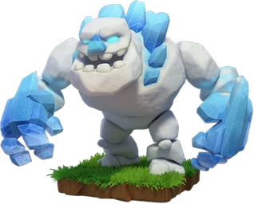

Ice Golem — Clash of Clans
Updated: 26 August 2026 · By the Goblins Farm team
The Ice Golem is a budget tank with a genuinely useful death effect: when destroyed it freezes nearby defences briefly. That turns a cheap unit into a free, self-timing freeze spell delivered exactly where the fighting is.
- Housing space
- 15
- Levels
- 9
- Trained in
- Dark Barracks
- Targets
- Ground only
- Attack speed
- 2s
- Range
- 1 tiles
What it does
It has solid hitpoints for its cost, slows what it attacks, and on death releases a freezing burst that briefly disables defences around it. Because it dies where the damage is heaviest, the freeze lands exactly where it is most needed, without you having to time anything.
How to use it
Cheap enough to include almost anywhere.
- Lead a push with one or two, so their death freeze covers the moment your main army arrives at the defensive core.
- Use them to protect fragile follow-up troops, since the freeze buys several seconds where nothing is shooting.
- Do not over-invest. Their damage output is minimal; they are a utility unit, not a damage one.
How to beat it
There is no direct counter to the death freeze, so defence is about not needing those seconds: overlapping defensive coverage means a brief freeze on one cluster does not open the whole base. Defending troops and heroes, which are not affected the same way as buildings, also keep pressure on while defences are down.
Stats by level
| Level | Hitpoints | DPS | Research cost | Research time | Town Hall |
|---|---|---|---|---|---|
| 1 | 2,600 | 24 | — | — | 11 |
| 2 | 2,800 | 28 | 27,500 Dark Elixir | 2 d | 11 |
| 3 | 3,000 | 32 | 42,500 Dark Elixir | 2 d 12 h | 11 |
| 4 | 3,200 | 36 | 50,000 Dark Elixir | 3 d 6 h | 12 |
| 5 | 3,400 | 40 | 62,500 Dark Elixir | 4 d | 12 |
| 6 | 3,600 | 44 | 110,000 Dark Elixir | 6 d 12 h | 14 |
| 7 | 3,900 | 48 | 140,000 Dark Elixir | 7 d 12 h | 15 |
| 8 | 4,200 | 52 | 180,000 Dark Elixir | 8 d | 16 |
| 9 | 4,350 | 56 | 280,000 Dark Elixir | 10 d 14 h | 17 |

Where these numbers come from. Read from Clash of Clans' own game files, client build 18.400.21. They are exact for that build and do not reflect anything released after it, so verify in game before committing an upgrade.
Game values are read from Supercell's own game files, reproduced as fan content under Supercell's Fan Content Policy. Goblins Farm is not affiliated with, endorsed, sponsored, or specifically approved by Supercell, and Supercell is not responsible for it.
 Frequently asked
Frequently asked
What happens when an Ice Golem dies?
It releases a freezing burst that briefly disables nearby defences. Because it dies where defensive fire is heaviest, the freeze automatically lands where the attack needs it most.
Is the Ice Golem a damage troop?
No. Its damage output is minimal. It is a cheap tank and a utility unit whose value is the death freeze and the slowing effect, not the damage it deals.
 Keep reading
Keep readingGoblins Farm is not affiliated with, endorsed by, sponsored by, or specifically approved by Supercell. Clash of Clans is a trademark of Supercell Oy. This material is unofficial fan content produced under Supercell's Fan Content Policy. Game values change with every update; always verify in-game before committing an upgrade.